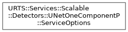
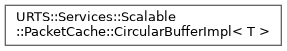

URTS
The University of Utah Seismograph Stations Real-Time Seismology package.
Loading...
Searching...
No Matches
Class Hierarchy
Go to the textual class hierarchy


Generated on Tue Feb 18 2025 02:55:54 for URTS by
1.9.8